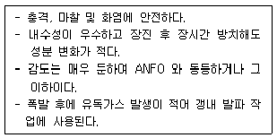
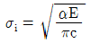
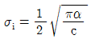
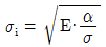
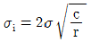
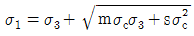
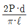

화약류관리산업기사 (2004-03-07 기출문제)
1과목: 일반화약학
1. 도화선 1m 의 표준 연소시간은 평균 몇 초가 되어야 하는가?
- 20 ~ 40초
- 49 ~ 80초
- 80 ~ 100 초
- 100 ~ 140초
(정답률: 알수없음)

2. 다음 중 흑색 화약의 주원료는 어느 것인가?
- KClO3
- KNO3
- Ba(NO3)2
- NH4NO3
(정답률: 알수없음)
3. 가열시험에 대한 설명으로 옳지 않은 것은?
- 화약류 안정도 시험 방법의 하나이다.
- 65℃ 항온건조기에서 24시간 방치한다.
- 적색연기가 발생하면 불량품으로 판정한다.
- 감량이 1/100 이상이면 불량품으로 판정한다.
(정답률: 알수없음)
4. 감열소염제(Cooling agent)로 이용하지 않는 것은?
- 염화칼륨
- 붕사
- 염화나트륨
- 규소철
(정답률: 알수없음)
5. 기폭제(Initial explosive)가 아닌 것은?
- 아지화납
- 테트라센
- 디아조디니트로페놀
- 펜트라이트
(정답률: 알수없음)
6. 고성능 다이너마이트(straight dynamite)의 성분이 아닌 것은?
- 니트로글리세린
- 질산나트륨
- 질석
- 목분
(정답률: 알수없음)
7. 초안유제(ANFO) 폭약에 대한 설명으로 옳지 않은 것은?
- 사용 시 전폭약을 붙여서 기폭해야 폭발이 된다.
- 프릴질산암모늄 : 94% 연료유 : 6% 의 혼합이 이상 적이다.
- 6호 뇌관 한개 정도라도 기폭이 가능하다.
- 연료유의 인화점은 50℃ 이상인 것을 사용해야 한다.
(정답률: 알수없음)
8. 마찰감도(Friction Sensitivity)시험법이 아닌 것은?
- 유리산식 감도시험
- 유발시험
- 진자마찰시험
- 밤식 마찰감도시험
(정답률: 알수없음)
9. 화약류의 보관 취급에 대한 설명으로 옳지 않은 것은?
- T.N.T는 목상자에 보관한다.
- Tetryl은 자루상자에 보관한다.
- 니트로글리세린은 동제 용기에 보관한다.
- 피크린산은 철제 용기에 보관한다.
(정답률: 알수없음)
10. 후가스(CO)로 인하여 갱내에서 사용하기에 가장 부적당한 화약은?
- 과염소산염 폭약
- 다이너마이트
- 질산암모늄 폭약
- T.N.T
(정답률: 알수없음)
11. 헥소겐 제조 시 주 원료는 무엇인가?
- 피크린산
- 디메틸아닐린
- 헥사메틸렌테트라민
- 펜타에리트
(정답률: 알수없음)
12. 다음 중 혼합(Composite Explosive)화약류는?
- 카알릿
- 니트로셀룰로오스
- 피크린산
- T.N.T
(정답률: 알수없음)
13. 뇌관의 위력시험과 관계가 없는 것은?
- 납판시험
- 둔성폭약시험
- 못시험
- 순폭시험
(정답률: 알수없음)
14. 산소공급제가 아닌 것은?
- 질산칼륨
- 염화나트륨
- 염소산칼륨
- 질산나트륨
(정답률: 알수없음)
15. 다음 중 화약류의 중요한 특성으로 거리가 먼 것은?
- 폭파효과
- 취급시 안정도
- 체적
- 저장성
(정답률: 알수없음)
16. 뇌관의 기폭성과 비기폭성의 차이점의 기준은 무엇인가?
- 6호 뇌관 1개로 기폭될 수 있는 것
- 8호 뇌관 1개로 기폭될 수 있는 것
- 순폭거리
- 뇌홍의 압력
(정답률: 알수없음)
17. 흑색화약과 비교한 무연화약의 특성에 대한 설명으로 옳지 않은 것은?
- 연속 발사가 용이하다.
- 점화하기 쉽다.
- 위력이 강하다.
- 가격이 고가이다.
(정답률: 알수없음)
18. 기폭약으로서 아지화납을 사용할 때 관체의 재질은?
- 알루미늄
- 철
- 구리
- 주석
(정답률: 알수없음)
19. 수중 발파용으로 주로 사용하는 폭약은?
- 초유 폭약
- 슬러리 폭약
- 초안 폭약
- 젤라틴 다이너마이트
(정답률: 알수없음)
20. 아래는 어느 폭약의 특징에 대한 설명인가?

- 슬러리 폭약
- 암모날 폭약
- 질산암모늄 폭약
- 흑색 폭약
(정답률: 알수없음)
2과목: 발파공학
21. 공경 30mm로 직교하는 2자유면 발파시 자유면에 대하여 평행천공하였다면 천공심도는 몇 ㎝인가? (단, 최소저항선 = 109㎝, 장약장 = 공경의 10배)
- 124㎝
- 254㎝
- 259㎝
- 409㎝
(정답률: 알수없음)
22. 중경암인 화강암에 대하여 시험발파에서 천공경을 28㎜로 하고 장약길이를 천공경의 12배로 하였을 때 장약량은? (단, 암석계수는 0.025이며, 폭약비중은 1.5이다.)
- 298.10 gr
- 310.18 gr
- 320.18 gr
- 334.13 gr
(정답률: 알수없음)
23. 비전기식 뇌관에 대한 설명으로 틀린 것은?
- 미주전류, 정전기, 전파 등에 대하여 안전하다.
- 결선이 단순, 용이하여 작업능률이 높다.
- 뇌관 내부에 연시장치가 없어 뇌관의 튜브길이에 의존하여 지발시간을 조절한다.
- 전기발파와 같이 결선을 도통시험기나 저항시험기로 확인할 수 없다.
(정답률: 알수없음)
24. 장공발파에 있어서 기폭제로 가장 이상적인 것은 다음 중 어느 것인가?
- 공업뇌관
- 전기뇌관
- 도폭선
- 전기도화선
(정답률: 알수없음)
25. 천공발파의 약실은 원통형의 형상이 된다. 폭발력이 가장 강력하게 작용하는 곳은 어느 곳인가?
- 공구
- 공저
- 측면
- 밑(Sub drilling)
(정답률: 알수없음)
26. 다음 중 측벽효과(channel effect)를 줄이는 방법으로 가장 적당한 것은?
- 밀폐장전
- 분산장약
- 직렬결선
- 정기폭
(정답률: 알수없음)
27. 발파풍압(폭풍압)의 원인 중 지반진동에 의해 발생하는것은?
- 공기압력파(APP)
- 암석압력파(RPP)
- 가스방출파(GRP)
- 전색방출파(SRP)
(정답률: 알수없음)
28. 결선에 관한 다음 설명 중 틀린 것은?
- 도폭선의 분기방향은 도폭선의 폭발진행방향으로 분기되어서는 안된다.
- 제발발파시 전기뇌관의 저항이 통일되지 않으면 직렬식 결선을 해서는 안된다.
- 직병렬식 결선의 경우 분로당 뇌관수는 40발 이하로 하고 분로균형(series balancing)이 이루어져야 한다.
- 제발발파시 병렬식으로 결선할 경우에는 동력선, 전등선을 이용할 수 있다.
(정답률: 알수없음)
29. 공업뇌관의 납판시험 결과 폭발흔적은 어느 방향의 위력을 나타내는가?
- 가로 방향
- 세로 방향
- 가로와 세로 방향
- 상하, 좌우 방향
(정답률: 알수없음)
30. Devine이 실험식으로 제시한 발파진동과 거리, 장약량의 관계식은 V=H[D/W1/2]-β이다. 이 관계식에 의한 설명으로 맞는 것은? (단, V : 최대 입자속도, H, β : 상수, D : 폭원으로부터의 거리, W : 지발당 최대장약량)
- 발파 진동속도는 거리에 비례하고 장약량에 반비례한다.
- 발파 진동속도는 장약량 및 거리에 반비례한다.
- 발파 진동속도는 장약량 및 거리에 비례한다.
- 발파 진동속도는 장약량에 비례하고 거리에 반비례한다.
(정답률: 알수없음)
31. 다음 중 발파계수 C를 바르게 나타낸 것은? (단, g: 암석항력계수, e: 폭약효력계수, d: 전색계수, w: 최소저항선)
- e· g· d
- e· g· d· w3
- e· g· d3· w
- e· g· d· w
(정답률: 알수없음)
32. 다음 중 ANFO 장전작업에 대한 설명으로 틀린 것은?
- 장전호스는 가급적 계속 연결한 호스를 사용한다.
- 장전호스는 발파공의 길이보다 60cm 이상 긴 것을 사용한다.
- 장전할 때는 장전기를 충분히 접지한다.
- 장약중에는 발파공에서 ANFO의 분출이 없도록 한다.
(정답률: 알수없음)
33. 발파진동치를 감소시키기 위하여 발파공내 주상장약을 분할하여 분산장약(deck charge)하려 한다. 발파공의 직경이 75mm일 때 인접폭약의 기폭을 방지하기 위하여 분할장 약들 사이에 필요한 전색장은 얼마인가? (단, 발파공은 습윤된 상태이다.)
- 90cm
- 75cm
- 45cm
- 30cm
(정답률: 알수없음)
34. 발파시 발파공을 중심으로 발생하는 방사상 균열(radial crack)의 생성원인과 관련이 가장 적은 것은?
- 충격파(shock wave)
- 반사파(reflected wave)
- 인장접선응력(tensional tangential stress)
- 폭발가스압(explosion gas pressure)
(정답률: 알수없음)
35. 다음 중 전기발파의 이점이 아닌 것은?
- 제발발파에 의하여 폭발력을 유효하게 이용할 수 있다.
- 폭발은 장시간에 걸쳐 완료되므로 피난시간이 많아 유리하다.
- 점화는 폭발개소를 떠나 안전지대에서 할 수 있다.
- 메탄가스가 있는 곳에서 발파하더라도 직접적인 인명피해가 없다.
(정답률: 알수없음)
36. 잔류약의 발생원인이 되지 않는 것은?
- Cut off
- Channel effect
- 화약사이 이물질(異物質) 혼합
- 과장약
(정답률: 알수없음)
37. 발파진동과 지진동을 비교한 것 중 가장 올바르게 설명된 것은?
- 주 진동수의 범위는 발파진동이 지진동보다 더 크다.
- 발파진동의 파형은 지진동보다 비교적 복잡하다.
- 지진동의 주파수는 100Hz 이상의 고주파이다.
- 발파진동은 상대적으로 진동시간이 길기 때문에 지진동에 비해 큰 에너지를 수반한다.
(정답률: 알수없음)
38. 공경이 32mm인 발파공을 공간 간격 10cm로 하여 2공을 제발 발파하였을 때 저항선 비는? (단, 장약 길이는 공경의 10배로 한다.)
- 1.45
- 1.55
- 1.65
- 1.75
(정답률: 알수없음)
39. 약포직경과 발파효과에 대한 설명 중 잘못된 것은?
- 약포직경, 장약공의 간격, 시차효과 등에 의해서 발파효과는 달라진다.
- 암석을 파괴시키는 것은 폭발로 인하여 발생하는 충격파이다.
- 밀폐장전의 경우는 폭약으로부터 직접 암반속에 충격파를 전달시킨다.
- 발파효과가 상승한다는 것은 밀폐장전보다는 부분 장전으로 틈새를 두어 발파시킴으로써 효과를 얻는 것이다.
(정답률: 알수없음)
40. 기명전압 20V, 전류 1.2A, 내부저항 3.0Ω 인 발파기를 사용하여 1.2m 각선이 달린 전기뇌관 5개를 직렬접속한 후 50m의 거리에서 발파할 때 소요전압은? (단, 전기뇌관 1개의 저항 0.972Ω , 모선 1m당 저항은 0.0209Ω )
- 11.94V
- 12.54V
- 13.56V
- 15.55V
(정답률: 알수없음)
3과목: 암석역학
41. 다음 중 소성변형을 가장 잘 나타내는 물체는?
- 물
- 강철
- 점토
- 연철
(정답률: 알수없음)
42. RMR분류에서 불연속면 방향에 대한 점수 보정시 아주 불리(Very Unfavourable)할 경우 가장 점수를 많이 보정해 주어야 하는 순서대로 나열된 것은?
- 터널 - 기초 - 사면
- 터널 - 사면 - 기초
- 사면 - 터널 - 기초
- 사면 - 기초 - 터널
(정답률: 알수없음)
43. 터널설계와 관련하여 불연속면의 주향방향과 터널의 방향이 어떤 경우일 때 굴착작업의 안정성에 가장 유리한가?
- 주향방향이 터널방향과 수직이고, 경사방향으로 굴진할 때
- 주향방향이 터널방향과 수직이고, 경사의 반대방향으로 굴진할 때
- 주향방향이 터널방향과 평행하고, 경사각도가 낮을 때
- 주향방향이 터널방향과 평행하고, 경사각도가 높을 때
(정답률: 알수없음)
44. 일축압축강도가 100 MPa이고 마찰각이 30도인 암석에 봉압을 20 MPa 가하고 축응력을 155 MPa 가할 경우, Mohr-Coulomb의 파괴조건에 의하면 암석은 파괴되지 않는다. 이 때 암석이 파괴되기 위한 공극수압은?
- 0.5 MPa
- 1.5 MPa
- 2.5 MPa
- 3.5 MPa
(정답률: 알수없음)
45. Griffith의 파괴이론에서 균열의 선단(先端)에 있어서 응력집중부의 최대 인장응력의 크기는? (단, σi : 인장응력, σ : 작용 인장응력, E : 탄성계수, c : 틈의 크기 의 1/2, α : 비례상수, r : 틈의 선단에서의 곡률반경)




(정답률: 알수없음)
46. 어느 암석의 진비중(眞比重)을 구하기 위하여 실험한 결과는 다음과 같다. 이때 진비중은? (단, pychnometer의 무게는 5.5g, 여기에 물을 넣어 평량 한 중량은 11g, pychnometer에 물과 시료를 넣어 평량한 중량은 16g, pychnometer에 물을 제외하고 시료만 잰 중량은 14g이었다.)
- 2.909
- 2.882
- 2.647
- 2.428
(정답률: 알수없음)
47. Hoek - Brown의 파괴조건식

에서 신선한 암석의 일축압축강도가 100kgf/cm2이다. 여기서, 시험편의 m=4.0, s=0.5 라면 시험편의 일축압축강도는 얼마인가?- 61kgf/cm2
- 71kgf/cm2
- 81kgf/cm2
- 91kgf/cm2
(정답률: 알수없음)
48. 지름 d ㎝, 두께 ℓ ㎝의 원판형 암석 시험편에 대하여 압열인장시험(Brazilian test)을 실시하여 하중 P ㎏에서 파괴되었다고 하면 이 암석 시험편의 인장강도는?



(정답률: 알수없음)
49. NATM 공법에 의한 터널 시공에서 사용되는 지보재가 아닌 것은?
- 목재지주
- 록볼트
- 숏크리트
- 강아치
(정답률: 알수없음)
50. 각종 암석강도시험중에서 가장 적은 값을 나타내는 것은?
- 압열 인장강도 시험
- 전단강도 시험
- 1축 압축시험
- 3축 압축강도 시험
(정답률: 알수없음)
51. 암반의 변형성을 측정하기 위한 시험방법 중 정적인 방법이 아닌 것은?
- 평판 재하 시험
- 수실 시험
- 공내 재하 시험
- 탄성파 속도 시험
(정답률: 알수없음)
52. 암석의 일축압축강도 시험에 있어서 시험편의 모양이 다르면 같은 암석, 같은 단면적과 높이를 가진 시험편이라도 그 시험 결과가 다르다고 한다. 이러한 효과를 무엇이 라고 하는가?
- 크기효과
- 분포효과
- 형상효과
- 시험효과
(정답률: 알수없음)
53. 터널설계와 관련한 암반의 공학적 분류인 Q 값을 얻는데 필요하지 않은 것은 무엇인가?
- 절리면의 거칠기
- 절리면의 변질상태
- 암반의 단축압축강도
- 코어암질지수(RQD)
(정답률: 알수없음)
54. 암석내 균열의 형태나 외부응력조건에 따라 균열첨단에 인접한 영역에 집중되는 응력의 크기를 결정하는 요소는?
- 변형률에너지
- 파괴인성
- 균열계수
- 응력확대계수
(정답률: 알수없음)
55. 암석의 강도시험에서 정확하게 측정하기가 가장 어려운 것은?
- 압축 시험
- 직접 인장시험
- 굴곡 시험
- 압열 인장시험
(정답률: 알수없음)
56. 다음 중 암석의 반발경도 측정법은?
- 쇼어(Shore) 경도 측정
- 록웰(Rockwell) 경도 측정
- 브린넬(Brinell) 경도 측정
- 모스(Mohs) 경도 측정
(정답률: 알수없음)
57. 다음 중 중간 주응력을 고려한 암석의 파괴기준이 아닌 것은?
- Nadai 이론
- Von Mises 이론
- Huber-Hencky 이론
- Griffith 이론
(정답률: 알수없음)
58. 다음 중 완전탄성체의 역학적 모형은?
- slider
- dashpot
- spring
- maxwell
(정답률: 알수없음)
59. 물체에 작용하는 힘은 표면력과 물체력으로 나누어진다. 다음 중 물체력에 속하지 않는 것은?
- 중력
- 자력
- 응력
- 관성력
(정답률: 알수없음)
60. 건조 암석이 수분을 흡수하게 되면 역학적 성질이 어떻게 변하는가?
- 일반으로 강도는 약해진다.
- 일반으로 강도는 강해진다.
- 일반으로 강도는 일정하고 체적은 증가한다.
- 일반으로 강도는 일정하고 체적은 감소한다.
(정답률: 알수없음)
4과목: 화약류 안전관리 관계 법규
61. 화약류 양도, 양수허가신청에 대한 설명 중 틀린 것은?
- 양수허가의 유효기간은 1년을 초과 할 수 없다.
- 1회에 허가할 수 있는 화약류 수량은 화약류 사용계획서에 기재된 그 연도의 1년간의 사용량을 초과할 수 없다.
- 화약류를 양도할 때 양도인은 양수인이 소지하는 화약류 양도, 양수허가증 뒤쪽의 양도인, 양수인 기재란에 소정의 사항을 각각 기재하여야 한다.
- 화약류 양수허가는 반드시 화약류 사용지를 관할 하는 경찰서장의 허가를 받아야 한다.
(정답률: 알수없음)
62. 총포· 도검· 화약류등단속법상 제조업자 및 판매업자에 대한 필요적 허가 취소사유에 해당하지 않는 것은?
- 허가의 결격사유에 해당하게 된 때
- 지정된 기간내에 완성검사를 받지 못한 때
- 사업개시 후 정당한 사유 없이 1년 이상 휴업한 때
- 법에 의한 지시명령을 3회위반 하였을 때
(정답률: 알수없음)
63. 다음 중 화공품에 해당하지 않는 것은?
- 공업용뇌관
- 실탄 및 공포탄
- 시동약(始動藥)
- 뇌홍 등의 기폭제
(정답률: 알수없음)
64. 꽃불류 사용시 쏘아 올리는 꽃불류는 몇 m이상의 높이에서 퍼지도록 하여야 하는가?
- 10 m
- 20 m
- 30 m
- 50 m
(정답률: 알수없음)
65. 꽃불류 사용의 기술상 기준으로 맞지 않는 것은?
- 발사통을 2개이상 쏘아 올릴 경우 발사통 서로간에 상당한 거리를 두어야 한다.
- 꽃불류를 쏘아 올리거나 폭발 또는 연소시키고 있는 경우 그 장소 부근에서 꽃불류의 발사용 화약의 계량을 하지 아니한다.
- 꽃불류의 발사용 화약에 점화하여도 그 화약이 폭발 또는 연소되지 아니할 때에는 그 발사통에 많은 양의 물을 넣고 5분 이상 경과한 후에 회수한다.
- 쏘아 올리는 꽃불류의 사용은 화약류관리보안책임자의 책임하에 하여야 한다.
(정답률: 알수없음)
66. 화약류 폐기의 기술상의 기준으로 맞는 것은?
- 해안으로부터 5킬로미터이상 떨어진 깊이 100미터이상의 바다 밑에 가라앉도록 한다.
- 얼어 굳어진 다이나마이트는 완전히 녹여 강물에 가라앉도록 한다.
- 도화선은 전기뇌관으로 폭발처리한다.
- 도폭선은 전기뇌관으로 폭발처리한다.
(정답률: 알수없음)
67. 전기뇌관의 도통시험시 시험전류를 측정하여 몇 [A]을 초과하지 말아야 하는가?
- 0.1
- 0.⑤
- 0.01
- 0.001
(정답률: 알수없음)
68. 화약류저장소 부속시설 등의 보안거리에 대한 설명으로 옳은 것은?
- 경비실은 4종 보안물건의 8분의 1
- 부속시설은 4종 보안물건의 3분의 1
- 경비실은 3종 보안물건의 2분의 1
- 부속시설은 3종 보안물건의 2분의 1
(정답률: 알수없음)
69. 화약류 운반시에 펜타에리스릿트는 수분 또는 알코올분이 몇 % 정도를 머금은 상태로 하여야 하는가?
- 20%
- 23%
- 25%
- 15%
(정답률: 알수없음)
70. 꽃불류저장소 주위의 방폭벽은 저장소 바깥벽과의 거리가 몇 m 이상되어야 하는가?
- 1 m 이상
- 1.5 m 이상
- 1.7 m 이상
- 2.0 m 이상
(정답률: 알수없음)
71. 총포· 도검· 화약류단속법시행령에 규정된 제1종 보안물건에 속하는 것은?
- 촌락의 주택
- 철도
- 국보로 지정된 건조물
- 석유저장시설
(정답률: 알수없음)
72. 다음 중 화약 및 화공품의 종류에 따라 폭약 1톤으로 환산하는 수량을 기술한 것 중 틀린 것은?
- 화약 2톤
- 실탄 및 공포탄 200만개
- 미진동파쇄기 10만개
- 공업용뇌관 및 전기뇌관 100만개
(정답률: 알수없음)
73. 다음 중 화약류저장소에 대한 설명으로 옳은 것은?
- 꽃불류저장소는 흙둑 대신 방폭벽을 설치하여야 한다.
- 2급저장소는 일시적인 토목공사를 위해 설치하는 저장소이므로 화약류의 판매업을 위한 저장소로 사용할 수 없다.
- 화약류 판매업자와 제조업자는 3급 화약류저장소를 설치할 수 없다.
- 지상 1급저장소의 출입문은 2중으로 덧문에는 두께 4mm 이상의 철판으로 보강하고 2개 이상의 자물쇠 장치를 해야 한다.
(정답률: 알수없음)
74. 광물을 채굴하는 사람이 허가없이 양수할 수 있는 폭약의 수량은?
- 1125 g 이하
- 1225 g 이하
- 1325 g 이하
- 1425 g 이하
(정답률: 알수없음)
75. 다음 중 총포· 도검· 화약류등단속법 제74조의 300만원이하의 과태료에 해당되지 않는 행위는?
- 화약류의 운반과정에서 운반신고필증을 지니지 아니 한 사람
- 화약류안정도 시험결과 대통령령기술기준에 미달한 화약류를 폐기하지 않은 사람
- 화약류출납부를 비치하지 않거나 부실 기재한 사람
- 화약류를 취급하면서 화약류관리보안책임자의 안전상 지시감독에 따르지 아니한 사람
(정답률: 알수없음)
76. 다음 설명 중 틀린 것은?
- 화약류 제조업자는 행정자치부령이 정하는 기준에 따라 위해예방 규정을 정하여 경찰청장의 승인을 받아야한다.
- 화약류 제조업자 및 그 종업원은 위해 예방 규정을 지켜야 한다.
- 화약류 제조업자는 행정자치부령이 정하는 기준에 따라 그 종업원에 대한 자체적인 안전교육계획을 세워 지방경찰청장의 승인을 얻어야 한다.
- 항의 위해예방을 승인하는 감독관청은 재해의 예방을 위하여 특히 필요하다고 인정되는 때에는 다량의 화약류를 사용하거나 상당기간 계속하여 화약류를 사용하는 사람에 대하여도 안전교육계획을 세우도록 명할 수 있다.
(정답률: 알수없음)
77. 건축업자 '갑'은 사용지 관할 경찰서장의 허가없이 1일 폭약 100kg, 뇌관 100개를 사용하여 터파기 작업을 하다 경찰관서에 적발되었다. 그 처벌은?
- 10년이하의 징역 또는 2천만원 이하의 벌금
- 5년이하의 징역 또는 1천만원 이하의 벌금
- 2년이하의 징역 또는 오백만원 이하의 벌금
- 과태료 300만원
(정답률: 알수없음)
78. 화약류 관리보안(제조)책임자가 면허를 다른사람에게 빌려주었다. 처벌로 옳은 것은?
- 1월 효력정지
- 3월 효력정지
- 6월 효력정지
- 면허취소
(정답률: 알수없음)
79. 다음 중 화약류사용자가 화약류출납부를 보관(존)해야 하는 기간은?
- 기입을 완료한 날부터 3년
- 기입을 완료한 날부터 2년
- 기입을 시작한 날부터 2년
- 사용허가의 종료후 1년
(정답률: 알수없음)
80. 보안물건의 정의에 대한 설명이다. 맞는 것은?
- 화약류 취급상의 위해로부터 보호가 요구되는 장비, 시설 등
- 화약류를 사용 하는데 필요한 안전거리내의 시설물 등
- 화약류를 사용하는 장소부근의 시설물 등
- 화약류를 운반, 사용하는 장소로부터 근거리의 시설물 등
(정답률: 알수없음)